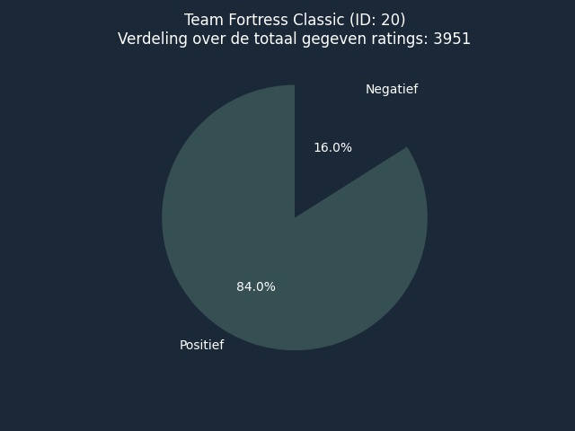

With this bar chart, you can see how many games fall into each price category.

With this bar chart, you can see how frequently the top 10 genres occur in games.

This diagram shows the scores for the games. It distinguishes between half digits. For example, you should interpret 0.5 as: from 0 to 0.5. Then the y axis shows the number of games for this figure.

The higher the price the higher the rating is.

With this bar chart, you can see how many hours a game is expected to be played based on how many achievements a game has.

This pie chart shows the division between positive and negative. The title shows the total number of ratings given.
{% if results %}
Research data:
{% for result in results %}{{ result }}
{% endfor %} {% endif %}